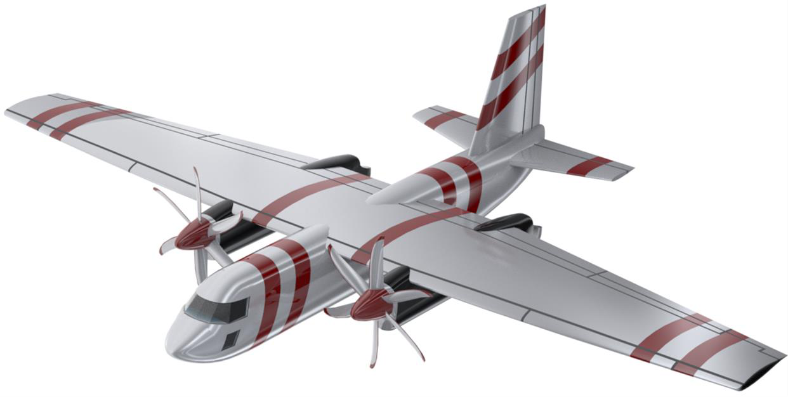
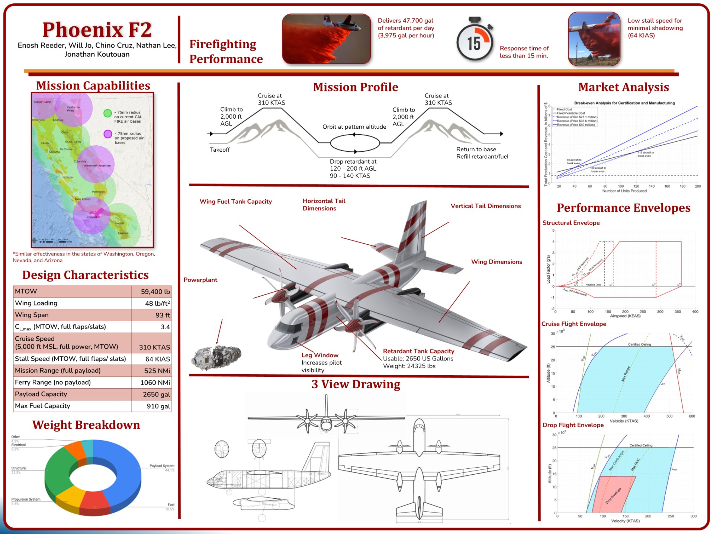

Cal Poly AERO 443 / 444 / 445 — Senior Aerospace Design Capstone

The Phoenix F2 is a purpose-built aerial firefighting aircraft designed from the ground up as part of the Cal Poly Aerospace Engineering capstone sequence (AERO 443/444/445). The design addresses the growing demand for next-generation air tankers capable of rapid response and high retardant capacity in challenging terrain. Completed with teammates Will Jo, Chino Cruz, Nathan Lee, and Jonathan Koutouan.

As a side project during the capstone year, I 3D-printed a scale car model to support a master's student's aerodynamics thesis experiment. The video shows the car in the Cal Poly low-speed wind tunnel — a separate demonstration of wind tunnel techniques and flow visualization, not Phoenix F2 testing.
The Phoenix F2 design was presented at the Cal Poly AERO 445 design review, demonstrating a viable clean-sheet aircraft concept that meets FAA regulatory requirements and addresses real-world aerial firefighting mission profiles. The project sharpened full-aircraft systems-integration skills spanning aerodynamics, structures, propulsion, and avionics architecture.